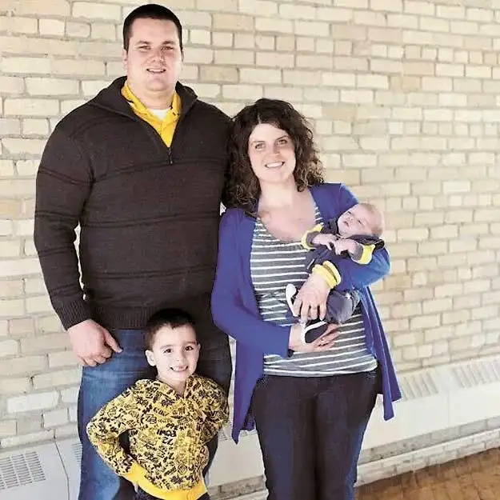

[For the sake of having a repository for my newspaper columns and articles, and allowing a second chance for those who missed them the first time, I reprint them here, with permission. The following ran in The Forum newspaper on Feb. 28, 2015.]

Faith Conversations: Former NDSU Football Player Finds ‘Safe’ Place for Faith
By Roxane B. Salonen
WEST FARGO – When Nate Safe left the football field after his last college game for the North Dakota State University Bison in 2007, he thought he was done with athletics.
Though the former left-tackle offensive lineman calls the experience “phenomenal,” it was simply time to move on.
Safe married his bride, Alice, and embarked upon what seemed like a mature, sensible path as a financial planner.
But something was missing.
“What I’d been finding meaning in – sports – was gone. Turns out that had only been temporary,” Safe says. “So I was struggling for meaning in life.”
Alice suggested he join a men’s Bible study. Safe was open to it, but reluctant. The gathering began at 6:15 a.m., and he’d never really experienced fellowship with other guys before.
But within a short amount of time, Safe knew he’d found a second home.
“It was the last place I wanted to be that morning,” he says. “But they were talking about following Jesus, and it wasn’t just saying it, but how can we live this out in our lives.”
As God’s love penetrated Safe’s life, he began seeing everything anew, including his career.
After sharing with friends his dissatisfaction in that area, Safe was led, that very day, to what seemed like a divinely timed interview for a regional position with the Fellowship of Christian Athletes.
The board deemed him a fit, and Safe became southeast area representative for the organization, which focuses on three youth-oriented areas of ministry – coaching, campus, camps and community.
Safe quickly began to see what he’d missed while at NDSU – the chance to “reach people in their sphere of influence with the message of Jesus.”
Living within a culture that is becoming increasingly polarized, sports remains one of the few equalizers, he says, with the potential to break down barriers of race, economy and gender, and bring all people together for a common goal.
“It becomes a tremendous opportunity to provide unity in a culture that seems totally segmented, and I love that,” Safe says. “It’s right up my alley. I get to mix faith and sports together and call it work.”
Not long after he took up his new post in 2011, Safe ran into Cody Kittelson, an old football buddy from NDSU, who asked if he’d be interested in working part time as part of his coaching staff at Kindred (N.D.) High School. Safe was intrigued, and by evening, had made a decision.
“You can’t really take the athlete out of a person, especially when you’ve been with it at the Division I level,” Kittelson says. “He called me the next day and said, ‘Yeah, I’m in,’ and I was lucky to get him on staff. We were football coaches together for three years, and then he started as assistant track coach last year.”
Braden Klose, who graduated last year from Kindred, says one of the things that impressed him about Safe was his boldness. “I feel like sometimes as Christians, we’re timid of going forth, but just the fact that he was willing to spread the word openly about being a Christian made an impact.”
At Safe’s encouragement, Klose joined Kindred’s newly forming FCA “huddle” – basically a way for students to come together to share their love of Christ and encourage each other in their spiritual walk both on and off the field.
“I played a lot of sports throughout high school, and while most coaches point out things you do well and things you do poorly, Coach Safe would tell you what you’re doing right and then guide you in the direction of what needed to be fixed. And he cared about everyone as individuals, not just as athletes.”
Safe says along with helping the students, FCA also works with coaches to empower them to be leaders who employ spiritual principles to better help students develop their whole selves.
Joan Halland, head track coach at Kindred, says she’s been thrilled with Safe’s “low-key but passionate” presence as her assistant. “He’s not in your face as some are (with faith) and he cares about the students. That’s why they respond to him so well.”
Along with his good rapport with young people, she adds, Safe happens to be very skilled and knowledgeable in athletics.
“He knows what he’s talking about,” she says. “He’s very well respected here.”
Alice says her husband is like a big teddy bear, easy to “relax with, be friends and just goof off with.
“He definitely has a good heart in everything he does. You can tell he means well and wants to do the right thing,” she says. “Not with just our marriage but with anything, he puts 100 percent into it.”
When he’s home with the boys, he’s also good for a wrestling match or two. “He loves riling up the kids and has a lot of fun with them.”
 |
| Former NDSU football player Nate Safe and his family. Special to The Forum |
{kind=link}
Safe says he’s grateful to have stumbled back upon the thing in life that makes him tick – helping kids be their best selves through developing and deepening their relationship with Christ, through the love of athletics.
“To be honest, if someone would have invited me to go to a church event as a kid, I don’t think I would have, but to have something like FCA, it removes barriers and other things that usually stop people from getting involved,” he says. “It’s important to us to get into the students’ world and meet them on their level.”